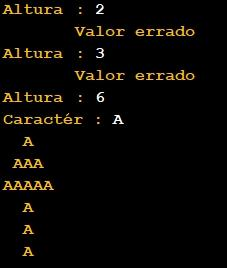

inicio ProgramaPrincipal
definir inteiro alt = 0
enquanto verdadeiro faz
ler alt "Altura : "
se alt % 2 == 0 && alt >= 4 então
quebrar
fim se
escrever "\tValor errado\n"
fim enquanto
ler texto txt "Caractér : "
executar copa(alt / 2 , txt)
executar tronco(alt / 2 , txt)
fim ProgramaPrincipal
funcao vazio linhaCopa(inteiro sp , inteiro chars , texto txt)
iterar inteiro i de 0 até sp passo 1
escrever " "
fim iterar
iterar inteiro i de 0 até chars passo 1
escrever txt
fim iterar
escrever "\n"
fim linhaCopa
funcao vazio copa(inteiro alt , texto txt)
iterar inteiro i de 1 até alt + 1 passo 1
definir inteiro sp = alt - i
definir inteiro chrs1 = i * 2 - 1
executar linhaCopa(sp , chrs1 , txt)
fim iterar
fim copa
funcao vazio tronco(inteiro n , texto ch)
iterar inteiro i de 0 até n passo 1
iterar inteiro j de 0 até n - 1 passo 1
escrever " "
fim iterar
escrever ch + "\n"
fim iterar
fim tronco